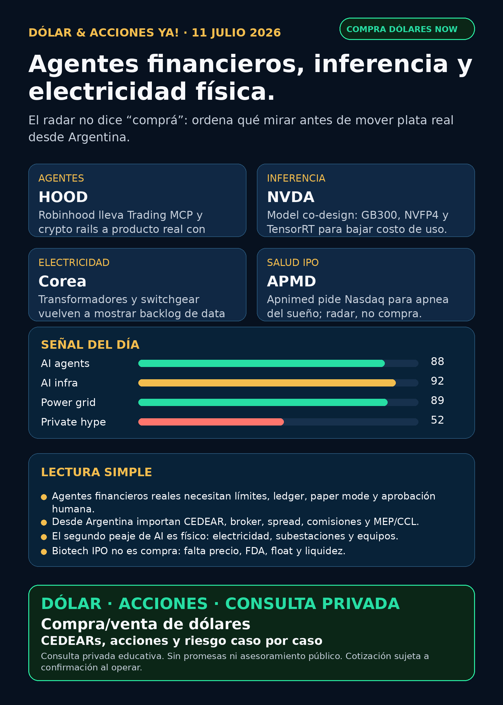

Agentes financieros, inferencia y electricidad física.
Robinhood, NVIDIA, power hardware y salud: research educativo para Argentina, no orden de compra.
Texto WhatsApp
Placa del día

Dólar & Acciones YA — 11/07
Lectura simple del día
La señal de hoy no es un ticker mágico. Es que AI empezó a bajar de la demo al mundo operativo: agentes que intentan asistir trading, modelos diseñados para exprimir hardware, data centers que necesitan equipamiento eléctrico real, y salud/biotech que trae nuevos IPOs para vigilar.
En criollo: no alcanza con preguntar “qué acción de AI compro”. La pregunta útil es qué peaje cobra cada empresa: vender chips, bajar costo de inferencia, operar rails financieros, fabricar transformadores, financiar data centers o resolver un problema médico grande. Cada peaje puede ser negocio, pero también puede estar caro, tener riesgo regulatorio, ser difícil de operar desde Argentina o directamente no cotizar todavía.
Para Argentina hay una segunda capa obligatoria: buena empresa afuera ≠ buen instrumento local. Antes de ejecutar plata real hay que mirar CEDEAR o acción directa USA, liquidez, spread, comisiones, ratio, MEP/CCL, impuestos y tamaño prudente dentro de cartera.
Contexto dólar para lectores argentinos, tomado de fuentes públicas a la mañana: BlueLytics marcó oficial vendedor ARS 1.513,00 y blue vendedor ARS 1.515,00 con timestamp 2026-07-10 19:45 ART. CriptoYa mostró dólar oficial vendedor ARS 1.510,00 a las 08:33 ART, USDT cripto ask ARS 1.572,28 a las 08:46 ART, MEP AL30 24hs ARS 1.567,51 y CCL AL30 24hs ARS 1.540,43 con timestamp 2026-07-10 16:59 ART. Si MEP/CCL vienen con cierre previo, se usan como referencia educativa, no como precio vivo de broker.
Esto está ordenado por valor educativo y fuerza de señal de radar, no por recomendación de compra.
Tesis central
La tesis central del día: AI se está industrializando en tres capas nuevas para mirar.
1. Agentes financieros: Robinhood confirma que los agentes dejan de ser demo y empiezan a tocar productos reales, con guardrails humanos.
2. Inferencia eficiente: NVIDIA no sólo vende GPU; publica metodología para diseñar modelos que funcionen mejor sobre Blackwell/GB300, NVFP4 y TensorRT.
3. Infraestructura física: Corea vuelve a mostrar que transformadores, switchgear y power hardware son cuello de botella de data centers.
La lectura humana: radar alto, sí. Compra automática, no. Hay que separar señal de producto, precio, instrumento, liquidez y riesgo.
Señales educativas del día
1) Robinhood — agentes financieros, crypto rails y control humano
- Empresa/ticker: Robinhood /
HOOD. - Qué pasó: Robinhood Newsroom confirmó Robinhood Chain mainnet, Stock Tokens y Agentic Accounts para crypto trading usando Trading MCP. La descripción importante: el humano define capital, límites y guardrails; el agente asiste, no debería operar sin control. TradingView/Cointelegraph del 11/7 agregó que la función crypto llegaría “soon”, que habría más de 70.000 agentic accounts desde mayo y que Robinhood Chain procesó 17 millones de transacciones desde unas 350.000 wallets en su primera semana.
- Fuentes: Robinhood Newsroom https://robinhood.com/us/en/newsroom/robinhood-accelerates-global-expansion-robinhood-chain-mainnet-stock-tokens-agentic-trading/ ; TradingView/Cointelegraph https://www.tradingview.com/news/cointelegraph:3ef096651094b:0-robinhood-says-its-ai-agent-feature-will-soon-be-assisting-crypto-traders/
- Lectura en criollo: los agentes de trading ya no son sólo videos de YouTube. Están entrando en brokers y crypto rails. Pero eso no elimina el riesgo: errores, mala data, permisos mal definidos y regulación pueden romper una cuenta.
- Accionable local Argentina:
HOODes acción global; disponibilidad local/CEDEAR/spread debe verificarse en broker antes de hablar de ejecución. Para público argentino, la parte más valiosa hoy es educativa: cómo se gobierna un agente financiero. - Estado: señal fortalecida / en radar; no promesa de rentabilidad.
2) NVIDIA — el moat pasa por costo de inferencia, no sólo por vender GPUs
- Empresa/ticker: NVIDIA /
NVDA. - Qué pasó: NVIDIA Developer publicó el 10/7 “AI Model Co-Design: Hardware-Friendly LLM Design”. El post explica cómo diseñar modelos para que funcionen mejor con GPU tiles, NVFP4, TensorRT Model Optimizer, LLM Compressor, expert parallelism y Blackwell/GB300.
- Fuente primaria: https://developer.nvidia.com/blog/ai-model-co-design-hardware-friendly-llm-design/
- Lectura en criollo: el moat no es sólo fabricar el chip. Es tener el manual, el software y el ecosistema para que los modelos corran más barato y más rápido en ese hardware.
- Accionable local Argentina:
NVDAsuele tener CEDEAR, pero precio, ratio, liquidez y spread se verifican al operar. Internacional/global: acción directa Nasdaq. - Estado: fortalece tesis estructural; vigilar valuación y concentración de demanda.
3) Power hardware Corea — el segundo peaje de AI sigue apareciendo
- Empresas/tickers: HD Hyundai Electric /
267260.KS; Hyosung Heavy Industries /298040.KS; LS Electric. - Qué pasó: BusinessKorea reportó backlog combinado superior a 30 billones de won, aproximadamente USD 21.400 millones, entre Hyosung Heavy Industries, HD Hyundai Electric y LS Electric. También reportó una orden de HD Hyundai Electric de alrededor de 1,12 billones de won, aproximadamente USD 800,9 millones, para un data center de una big tech norteamericana, y un aumento de target anual de órdenes a USD 5.185 millones.
- Fuente secundaria verificada: https://www.businesskorea.co.kr/news/articleView.html?idxno=272762
- Lectura en criollo: el segundo peaje de AI es electricidad física: transformadores, switchgear, distribución, subestaciones, lead times y producción local. Sin eso, el data center no prende.
- Accionable local Argentina: Corea/OTC no es fácil para todos.
GEV, Siemens Energy (ENR.DE) o Hitachi/Hitachi Energy (6501.T/HTHIY) pueden ser proxies globales más limpios, pero hay que verificar instrumento.YPF,PAMP,TGSyCEPUsirven para aprender energía local; no son proxy perfecto de data centers en Estados Unidos. - Estado: señal fortalecida del lane; falta primaria/IR de cada empresa antes de usarlo como headline duro.
4) Apnimed — nuevo radar salud fuera de GLP-1
- Empresa/ticker: Apnimed / símbolo solicitado
APMD. - Qué pasó: Apnimed presentó S-1 el 10/7 para listar en Nasdaq bajo
APMD. Su candidato AD109/Oxnimbi apunta a apnea obstructiva del sueño; la compañía dice que envió NDA a FDA en abril 2026, que Phase 3 LunAIRo/SynAIRgy incluyó cerca de 1.300 pacientes y que cumplió endpoints primarios y varios secundarios. También reconoce que FDA puede discutir significancia clínica. - Fuente primaria: SEC S-1 https://www.sec.gov/Archives/edgar/data/1745648/000119312526300909/apni-20260710.htm
- Lectura en criollo: salud no es sólo GLP-1. Apnea del sueño es mercado crónico grande, pero biotech/IPO significa riesgo binario: FDA, precio, float, demanda y ejecución.
- Accionable local Argentina: no accionable todavía.
APMDes símbolo solicitado; falta efectividad, pricing, fecha, liquidez e instrumento real. - Estado: vigilar / no accionable.
5) Cerebras — interés institucional, pero no reemplaza fundamentos
- Empresa/ticker: Cerebras /
CBRS. - Qué pasó: Schedule 13G/A del 8/7 muestra a FMR LLC/Fidelity con 28.878.217 acciones beneficially owned, 25,7% de Class A, incluyendo Class B convertibles 1:1.
- Fuente primaria: SEC https://www.sec.gov/Archives/edgar/data/2021728/000031506626001451/primary_doc.xml
- Lectura en criollo: ownership institucional puede sostener atención y liquidez, pero no dice solo si el negocio vale el precio. En CBRS siguen importando OpenAI/AWS, concentración de clientes, TSMC, lockups y márgenes.
- Accionable local Argentina: acción global; CEDEAR/acceso local no confirmado. Verificar broker y liquidez antes de hablar de ejecución.
- Estado: vigilar / fortalece radar, no tesis operativa nueva.
6) RVI — sponsor sales suben alerta de instrumento
- Instrumento/ticker: Robinhood Ventures Fund I /
RVI; sponsorHOOD. - Qué pasó: nuevo Form 4 del 10/7: Robinhood Markets vendió 17.949 shares de RVI el 8–9/7 por aproximadamente USD 552.770, con VWAP aproximado de USD 30,80.
- Fuente primaria: SEC Form 4 https://www.sec.gov/Archives/edgar/data/2085091/000178387926000091/wk-form4_1783721789.xml
- Lectura en criollo: wrappers privados no son acceso limpio a SpaceX/OpenAI/Anthropic. Si el sponsor vende, no significa “salir corriendo”, pero obliga a mirar NAV, premium/descuento, holdings, float, liquidez y acceso.
- Accionable local Argentina: no elevar como oportunidad sin NAV/premium/holdings y operabilidad real.
- Estado: vigilar / riesgo de instrumento.
Watchlist base — seguimiento rápido
- RKLB: sin primaria nueva superior después de ventas 10b5-1 e integración Iridium ya indexadas. Space sigue en radar; riesgo táctico vigente.
- NVDA: señal fuerte por model co-design, GB300, NVFP4 y TensorRT. Moat de plataforma fortalecido.
- PLTR: Reuters trajo disputa por contrato policial UK, pero contenido quedó bloqueado por DataDome. Queda a auditar, no headline público.
- TSM: TSMC IR/monthly revenue bloqueó Cloudflare; vigilar earnings del 16/7. No elevar previews de analistas como primaria.
- MU: HBM/memoria sigue tesis estructural, sin novedad primaria fresca hoy.
- GOOGL/GOOG: cloud/TPU/data centers siguen estructurales; sin señal nueva superior.
- AAPL: acuerdo Broadcom/custom ASIC hasta 2031 sigue como contexto; no vender como AI moat automático sin producto/monetización.
- HOOD: señal fuerte por Agentic Accounts, Robinhood Chain y crypto rails.
- TSLA: robotaxi/deliveries siguen en ruido de mercado; sin primaria nueva fuerte distinta a Q2.
- ASML: moat EUV/High-NA vigente;
ASML sí / all-in no. - Gold / GLD / GOLD / B: instrumento ambiguo. No reportar precio ni tesis hasta confirmar si se habla de oro, ETF, Barrick u otro activo.
- RVI: nueva sponsor sale por Form 4; vigilar NAV/premium/liquidez.
- CBRS: Fidelity/FMR 25,7% suma radar, no reemplaza análisis operativo.
Energía, grid y capa Argentina
- AI power global: carril fuerte. Incluye generación onsite, gas/nuclear, fuel cells, storage, transmisión, subestaciones, transformadores, switchgear, UPS y power quality.
- Transformadores/power hardware: revisados
GEV, Siemens Energy (ENR.DE), Hitachi/Hitachi Energy (6501.T/HTHIY), HD Hyundai Electric (267260.KS), Hyosung (298040.KS), Virginia Transformer y Delta Star. Señal más visible hoy: Corea por BusinessKorea; falta primaria/IR para headline más fuerte. - Bloom Energy /
BE: sigue en radar por 8-K del 9/7 rechazando short report; es señal de riesgo, no absolución. - Modine /
MOD: DEF 14A menciona inversión estratégica FY2026 y capital deployment por expansión Data Center; confirmación débil de tesis cooling. - Argentina:
YPF,PAMP,TGS,CEPUrevisadas como radar educativo local de gas, generación, tarifas, deuda y regulación. YPF 6-K del 8/7 fue cambio de director Clase A, no catalyst operativo. - En criollo: utility = empresa de servicios/energía regulada; puede tener demanda estable, pero carga deuda, regulación, permisos y riesgo político.
Pharma/salud
- Apnimed /
APMD: S-1 nuevo, oral OSA drug AD109/Oxnimbi, NDA abril 2026, Phase 3 positiva; vigilar FDA, pricing, IPO y liquidez. - AZN/IONS: Wainua/eplontersen ATTR-CM falló endpoint primario en SEC 6-K del 9/7; debilita programa específico.
- LLY/orforglipron/Foundayo: openFDA confirma aprobación real el 2026-04-01, no novedad fresca de julio. No usar titulares reciclados como catalyst.
- Sanofi/isatuximab/Sarclisa: openFDA muestra supplement labeling aprobado 2026-06-26 y label 2026-07-06, pero falta confirmar claim clínico exacto con fuente FDA/company antes de elevar.
Defensa, space, autonomía y crypto gobernado
- Defensa/guerra física:
AVAV,GE,RTX,LMT,NOC,GD,HWM,KTOS,BA,ITA/XARrevisados. AVAV Domestic Shield USD 500 millones sigue vigente como señal fuerte previa; hoy no apareció contrato primario nuevo superior. - Space/orbital AI:
RKLBySPCXrevisados. SpaceX/SPCX sigue central por filings/eventos previos, pero no hay filing material nuevo 24–72h y no se asume acceso local automático. - Autonomous mobility / physical AI: Tesla, Waymo/Alphabet, Uber, Zoox/Amazon y Joby revisados sin señal primaria nueva fuerte hoy.
- Crypto gobernado: señal del día pasa por Robinhood Chain/agentes/rails. No hay token nuevo para elevar; nada de casino de tokens.
Private markets / wrappers
- RVI: sponsor sales por Form 4. Antes de hablar como instrumento hay que mirar NAV, premium/descuento, holdings, liquidez y acceso Argentina/USA.
- DXYZ / ARKVX / AGIX / XOVR / FAPMI / Forge / VCX: sin filing/fact sheet fresco verificable hoy. No elevar como oportunidad por FOMO.
- Regla: wrapper privado con SpaceX/OpenAI/Anthropic no es acceso limpio si no sabemos NAV, premium, holdings y liquidez.
Red flags / hype para ignorar
- “Agente de trading” sin ledger, límites, paper mode, aprobación humana y control de permisos.
- “Crypto agent” vendido como rentabilidad garantizada.
- Perseguir
RVI,DXYZoVCXpor FOMO sin NAV/premium/holdings. - Tomar ownership institucional de CBRS como garantía de negocio.
- Publicar GLP-1 o pharma desde RSS bloqueado como si fuera fuente primaria.
- Confundir empresa extraordinaria con buen precio, buen instrumento local y buen tamaño de cartera.
Qué mirar después
- Robinhood: métricas reales de agentic accounts, pérdidas/errores, disclosures, regulación y expansión fuera de Estados Unidos.
- NVIDIA: adopción de NVFP4/GB300/TensorRT en clientes reales y efecto sobre costo de inferencia.
- Power hardware: buscar IR/filings de HD Hyundai Electric, Hyosung y LS Electric para confirmar backlog y órdenes.
- Apnimed: efectividad del IPO, precio, float, FDA y liquidez.
- TSMC/ASML/MU: próximos resultados y capex/señales de HBM/CoWoS.
Cartera / portfolio base
La cartera de Ricardo fue liquidada, devuelta y terminada según estado vigente informado el 24/06. No hay posiciones activas ni P&L real para reportar acá. Stock Radar queda como vigilancia educativa para próxima decisión humana o nuevo inversor.
CTA privado
Si querés comprar o vender dólares, invertir en acciones/CEDEARs o pensar una estrategia financiera más personalizada, escribime por privado y lo vemos caso por caso. Cotización sujeta a confirmación al momento de operar.
Disclaimer
Esto no es asesoramiento financiero personalizado ni orden de compra/venta. Es research educativo para decisión humana: fuente, riesgo, instrumento, precio, liquidez, horizonte y tamaño de cartera se revisan antes de mover plata real.